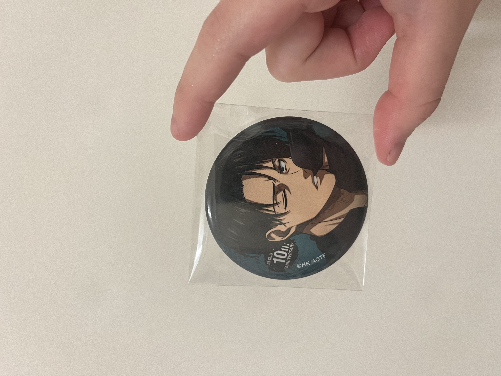
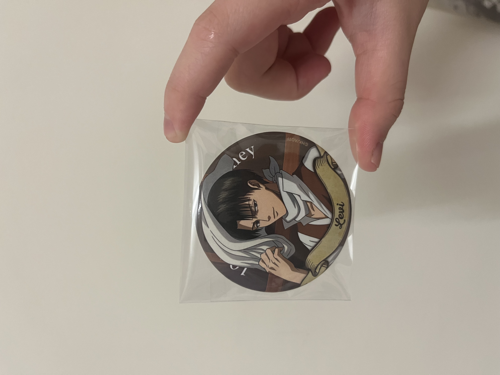
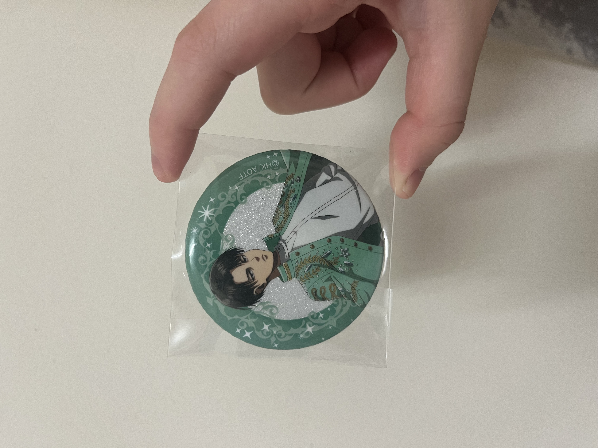
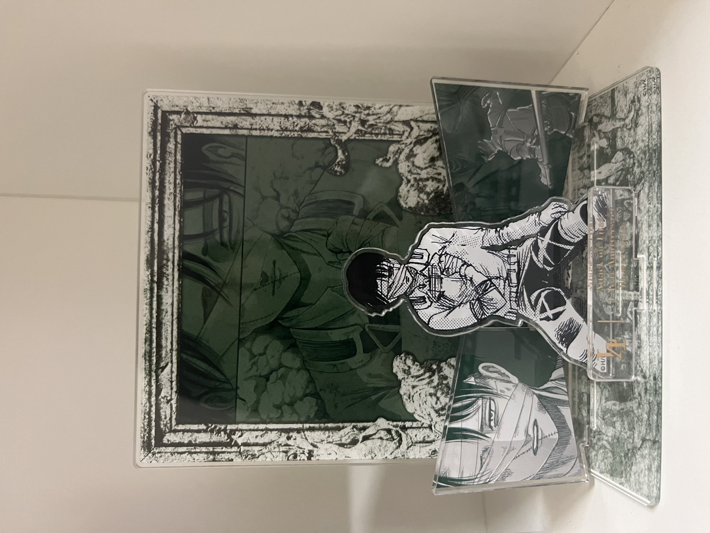
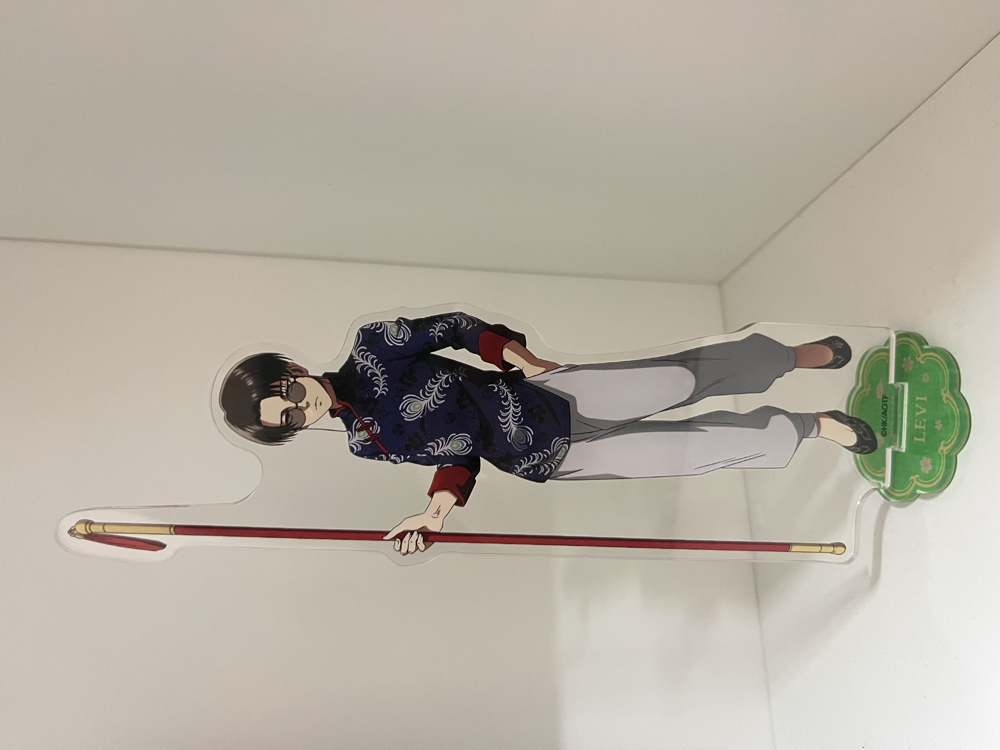
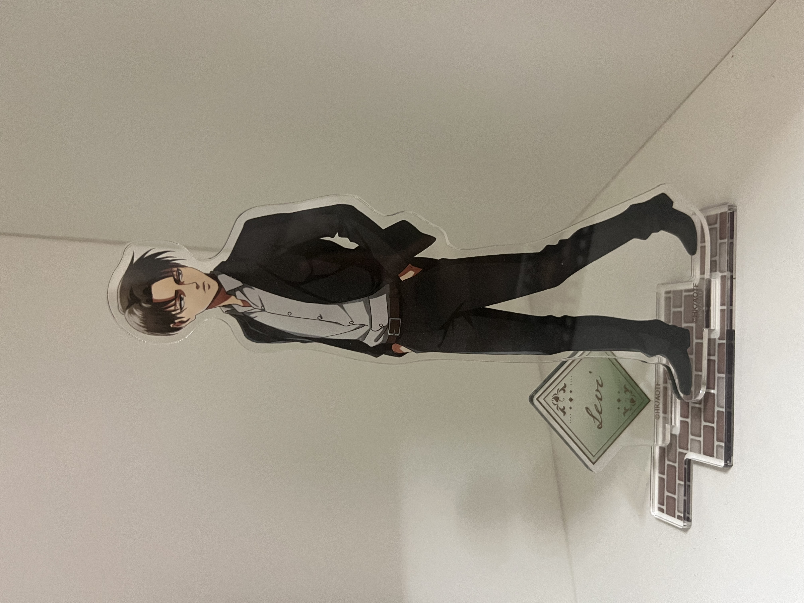

里維身著黑色西裝，冷峻的氣質與利落的剪裁完美結合，展現極致優雅與帥氣，令人無法移開目光。
在「未來與過去」系列中，里維手握抹布，展現了他一貫的潔癖本色。即使身處戰亂與時空交錯之中，他仍不忘保持整潔，這份執著既令人佩服，又增添了幾分獨特的魅力。
《進擊的巨人》聯名咖啡廳的限定周邊，里維身著白色西裝，氣質絕佳，帥氣非凡。他優雅的造型與細緻設計完美結合，讓人忍不住想收藏，實為粉絲必備之選。
里維在「天地之戰」中身負重傷卻堅持戰鬥，展現無比的堅韌與責任感。他成功擊殺吉克，結束與獸之巨人的宿命對決，為阻止「地鳴」做出關鍵貢獻，體現無私與犧牲精神。
這款以中華風為主題的聯名立牌商品，里維一身中式裝扮，儼然有種高人風範，彷彿隨時準備為你指點迷津，既威嚴又帶點可愛，令人愛不釋手。
里維正悠然散步，身著輕便服飾，展現難得一見的休閒風格。少了平日的冷峻，多了幾分隨性與自在，這樣的他彷彿能讓人感受到一絲溫暖與平靜。